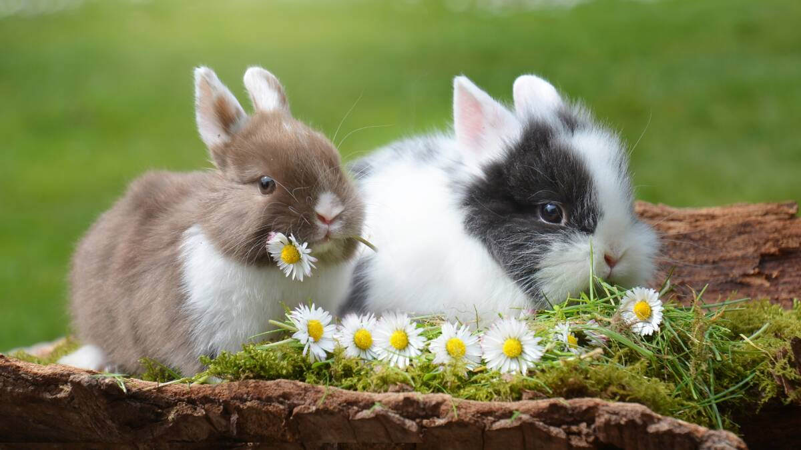
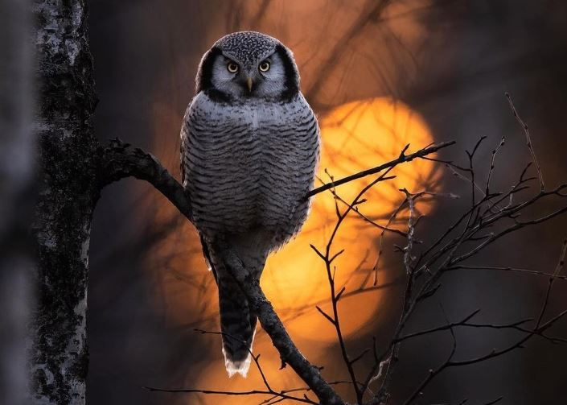
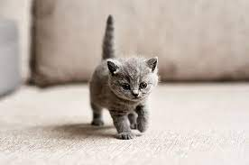

Singa dianggap hewan yang paling megah dan sering dianggap raja rimba dalam cerita-cerita seperti dongeng.
Singa sering dijadikan sebagai tokoh antagonis,
tetapi singa juga sering dijadikan tokoh protagonis seperti dalam film animasi The Lion King.
Kelinci

Kelinci atau kuilu adalah hewan mamalia dari famili Leporidae, yang dapat ditemukan di banyak bagian bumi.
berkembang biak dengan cara beranak yang disebut vivipar.
Dulunya, hewan ini adalah hewan liar yang hidup di Afrika hingga ke daratan Eropa.
Burung Hantu

Burung hantu adalah kelompok burung yang merupakan anggota dari ordo Strigiformes.
Burung ini termasuk golongan burung buas (karnivora/ pemakan daging) dan merupakan hewan malam (nokturnal).
Seluruhnya,terdapat sekitar 222 spesies yang telah diketahui, yang menyebar di seluruh dunia kecuali Antarktika,
sebagian besar Greenland, dan beberapa pulau-pulau terpencil.
Kucing

kucing adalah salah satu hewan peliharaan terpopuler di dunia.
Kucing yang garis keturunannya tercatat secara resmi sebagai kucing trah atau galur murni
(pure breed), seperti persia, siam, manx dan sphinx.
seperti ini biasanya dibiakkan di tempat pemeliharaan hewan resmi